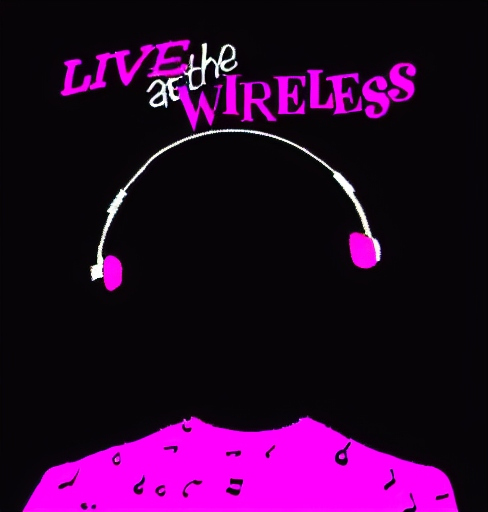

No track loaded
Play
Pause
fftSize: 1024 | Amplitude: 1.0
Instructions:
i
: Toggle instructions
w
: Toggle waveform shape
c
: Toggle circular visualizer
o
: Toggle outline mode
Arrow Up/Down
: Adjust waveform amplitude
Arrow Left/Right
: Adjust waveform fftSize